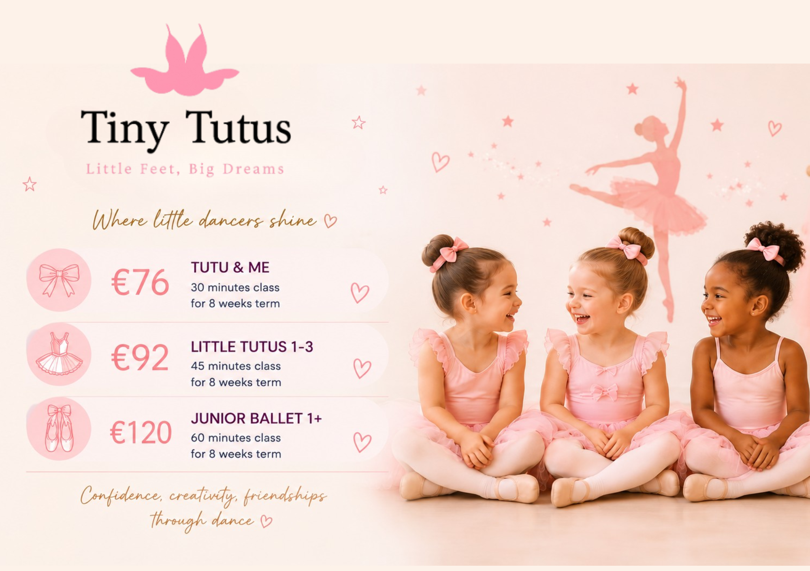
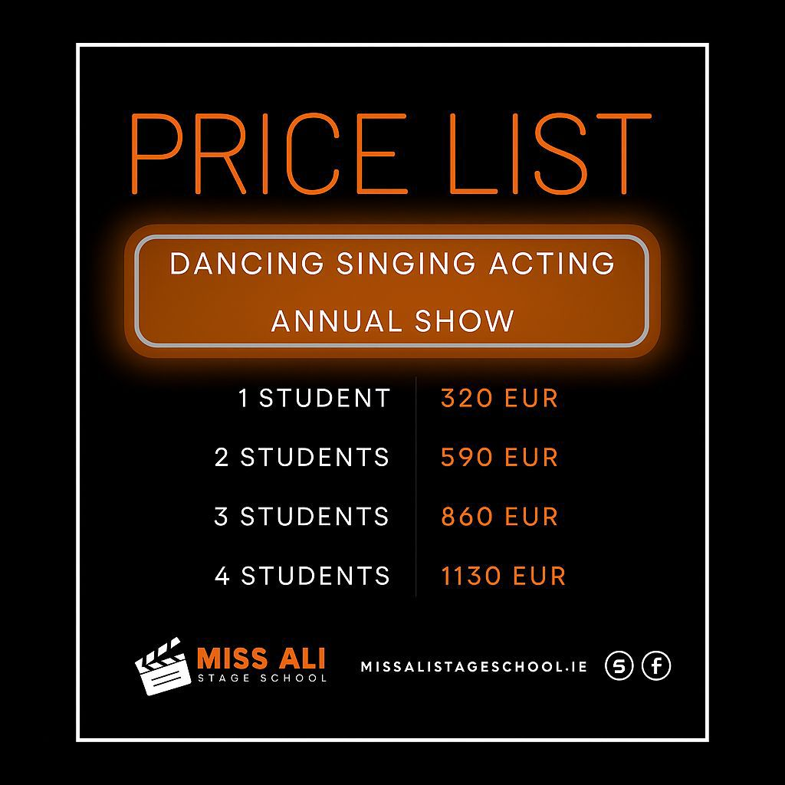
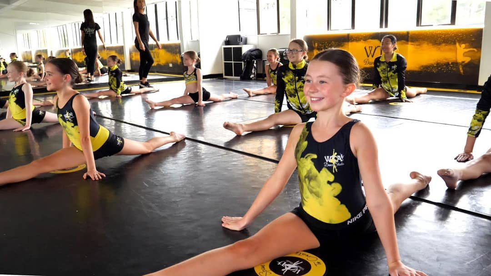

Dance Classes in Ireland
Explore 108 Dance classes and activities for kids across Ireland. Dance classes are most widely available in Dublin, Wicklow, Meath.


South Dublin Dance Academy
Ballet classes teaching posture, physical strength, coordination, balance and agility, providing a technical foundation for all other dance genres taught at the academy.
View full details →South Dublin Dance Academy
Urban-style hip hop dance class using current music, teaching choreography and rhythm in a fun, energetic environment for children and teens.
View full details →South Dublin Dance Academy
Tap dance classes exploring rhythm and percussion through footwork, building musicality alongside coordination and confidence for young dancers.
View full details →
Kate Buckley School of Dance
Ballet classes improving posture, coordination, concentration, musicality and confidence, with the option to sit RAD and ISTD ballet examinations.
View full details →Kate Buckley School of Dance
Hip-Hop dance class taught using the school's own syllabus, featuring intricate movements, isolations, rhythm work and new routines each week.
View full details →Kate Buckley School of Dance
Tap dance classes teaching ISTD tap technique and rhythm, suitable for a wide age range with the option to progress towards ISTD examinations.
View full details →

Irish Dancing Classes in Wicklow
Irish dancing classes provided by the Dowling School of Irish Dancing with classes in various locations in Wicklow and South County Dublin!
View full details →

Newpark Academy Jazz Department
The Jazz Department at Newpark Academy of Music is a vibrant community for aspiring and experienced musicians who want to explore the rich tradition and evolving art of jazz. Through ensemble performance, improvisation, theory, ear training, and one-on-one instruction, students develop the skills, creativity, and confidence needed to grow as artists. The programme welcomes instrumentalists and vocalists of all backgrounds, offering opportunities to collaborate, perform live, and learn from experienced educators and working musicians. From classic swing and bebop to contemporary jazz and fusion, students engage with a wide range of styles while building a strong musical foundation. Whether you're looking to sharpen your improvisation skills, join a jazz ensemble, or deepen your understanding of the genre, the Newpark Academy of Music Jazz Department provides an inspiring environment where musicians can learn, create, and connect.
View full details →

Tiny Tutus | Ballet & Dance Classes | Ages 2–14
Tiny Tutus offers magical ballet and dance classes for children aged 2-14 years in a warm, welcoming and nurturing environment across Dublin & Kildare. Classes are specially designed to build confidence, creativity, coordination and a love for dance while making every child feel supported and included. Offerings include Tutu & Me classes (parent & toddler), ballet, jazz dance, seasonal camps, recitals & special events, and ballet exams. Programmes are age-appropriate, fun and structured, helping children develop both technically and socially while enjoying the magic of dance. Tiny Tutus is known for its gentle and encouraging teaching style, qualified and Garda-vetted teachers, beautifully themed classes, confidence building through dance, and an inclusive, child-centred approach. Classes are available in multiple locations around Dublin & Kildare. Contact: tinytutusie@gmail.com or 0832062313. Website: tinytutusie.com. Instagram: @tinytutusie
View full details →

Baby & Me Ballet Dublin
Explore ballet through dance, music & play while bonding, socialising & making memories. Your little one will develop motor skills, coordination & balance in a playful environment. For babies and toddlers aged 14-30 months and their parents. Find us in the Fingal Liam Rodgers Centre, Drinan, Swords. Classes are 45 minutes and run on Tuesdays and Saturdays. Keep up to date on our social media.
View full details →Dizzy Footwork (Dance, Drama & Acrobatic)
Dizzy Footwork Dance Academy offers exciting, professional classes in drama, lyrical dance, hip hop dance, and acrobatics for children and teenagers of all ages and abilities. The academy is led by highly experienced, passionate staff dedicated to helping every student grow in confidence, creativity, performance, fitness, and teamwork within a fun and supportive environment. Classes are grouped by age, allowing students to learn alongside their peers while developing new skills, friendships, and self-expression. Class schedule: Tiny Tots Preschool (age 3): Monday Drama 3:45-4:45pm, Friday Hip Hop Dance 3:45-4:45pm, Friday Acrobatics 4:45-5:45pm. Mini Movers (ages 4-7): Monday Drama 3:45-4:45pm, Monday Lyrical Dance 5:45-6:45pm, Friday Hip Hop Dance 3:45-4:45pm, Friday Acrobatics 4:45-5:45pm. Crazy Crew (ages 8-12): Monday Drama 4:45-5:45pm, Monday Lyrical Dance 5:45-6:45pm, Friday Hip Hop Dance 4:45-5:45pm, Friday Acrobatics 5:45-6:45pm. Little Legends (ages 13-18+): Monday Drama 5:45-6:45pm, Monday Lyrical Dance 6:45-7:45pm, Friday Hip Hop Dance 5:45-6:45pm, Friday Acrobatics 6:45-7:45pm. To register, text your child's full name, age, and the class you'd like to join to 0831385263.
View full details →Do Your Dance Kids - Mountanville
Do Your Dance Kids is for older kids aged 7+ who are ready to take their dance skills to the next level. Classes are packed with exciting choreographed dances, dance techniques, and flexibility exercises in a fun-filled, one-hour session, exploring a variety of dance genres from hip-hop and jazz to contemporary. All children are welcome in a completely inclusive environment that celebrates individuality and creativity - if your child has additional needs, just let us know before class and we'll make sure they have the best experience possible. Location: the GP Room at Mount Anville Montessori Junior School. Wednesdays, 18:00-19:00. To find us, enter the gates and follow the arrows up to the roundabout - you can park beside the astro fields, then come through the blue gates to the right of the roundabout and follow the astro turf to the double doors; the GP Room is right there, just follow the music. Parking is plentiful and free. During class, parents are welcome to quietly watch in the GP Room or wait outside in the corridor, or drop off and return at pick-up time if you're comfortable doing so. Children should wear comfortable clothing and closed-toe shoes, and bring a water bottle (a water fountain and bathrooms are available on site). Please arrive 10 minutes before class to get your child ready to dance. If you can't make it, let us know via phone (0877007298) or email (doyourdancefitness@gmail.com) 24 hours before class.
View full details →Do Your Dance Tots - Blackrock
Do Your Dance Tots: Saturdays, 10:15-11am (ages 2-4), Newtownpark Pastoral Centre, Blackrock. Perfect for tiny dancers around 2 years old, though younger kids are welcome if they're ready to groove. Watch your little ones build strength, balance, and coordination through playful, follow-along dances, interactive games, and joyful singing throughout the 45-minute class - every session is a mini-adventure filled with movement and music, helping tots develop key motor skills while having a blast. All children are welcome in a completely inclusive environment - if your child has additional needs, please let us know before class so we can ensure they have the best experience possible. Parking is plentiful and free. Room 2 isn't the biggest, so parents are encouraged to wait just outside in the comfy couch area with the door open - you're welcome to peek in, take photos, or join your child in the fun, or stay with them the entire time if you'd prefer; parents must stay on the premises for the duration of the class. Please dress your child in comfortable clothing and closed-toe shoes and bring a water bottle (a water fountain and bathrooms are also available). Arrive 10 minutes before class to get settled. If you can't make it, let us know via phone (0877007298) or email (doyourdancefitness@gmail.com) 24 hours before class.
View full details →

Dublin Dance School
Dance With Me classes for age 2, with guardian participation. Ballet classes from age 3 upwards, at Wayside Celtic Football Club.
View full details →Irish Dance Classes
Classes open to children aged 3+. Every Wednesday at 5:30 - 6:30pm
View full details →

Malahide Girls' Brigade
Starting Saturday 19th September 2026, Malahide Girls' Brigade are looking for new members aged 2-18+. We do a mixture of dance, singing, skipping, and games. Class times: Tiny Tots (2-4 years), Saturdays 1.15-2.15pm; Explorers (5-8 years), Saturdays 1.15-3.15pm; Juniors (9-11 years), Saturdays 2-4pm; Seniors (12-13 years), Saturdays 2-4pm; Brigaders (14-17 years), Saturdays 12.30-1.30pm; Associates (18+ years), Saturdays 12.30-1.30pm. We are a uniformed organisation, with uniforms supplied from our stores. Interested? Contact Ruth on 0879389727.
View full details →Rosey Stars 🌟
Kids Zumba Classes led by a licensed and insured instructor. This high-energy class blends dance, movement, music, and fun, designed especially for children. Classes are run by Rosey Stars, a small local business, with a passionate acting and singing coach with years of experience on stage and screen. The focus is on fun, confidence, coordination, creativity, and having a great time in a safe, supportive environment. Location: Lusk Parish Hall. Day: Fridays. Class times by age group: ages 4-6, 4pm; ages 7-10, 5pm. Children are welcome to attend with support from their caregivers, including mum, dad, grandparents, or legal guardians - we love a supportive audience! Caregivers are welcome to stay, especially for younger children, but are not required to remain for the full class once the child is settled and comfortable. Kids should wear comfortable shoes suitable for dancing and comfortable clothes that allow free movement, and bring a water bottle to stay hydrated - no special equipment needed, just energy and smiles. Sibling discounts are available, classes are age-appropriate, structured, and fun, and it's a great way for kids to have fun, stay active, socialise, and build confidence.
View full details →Stagekidz Academy
Classes in Terenure, Lucan, & Blanchardstown! For ages 4yrs+, classes led by industry professionals where all children are encouraged to develop confidence and self belief. No term fees, weekly payment!
View full details →
Tiny Tutus
Tiny Tutus offers magical ballet classes for children aged 2 to 14 years in a warm and nurturing environment. Our most popular classes are the Tutu & Me parent & child ballet sessions for toddlers aged 2 to 3.5 years. These special classes are designed for little dancers and their caregivers to enjoy music, movement, imagination and bonding time together. We also offer independent ballet classes for preschool and school-age children, helping students build confidence, coordination, creativity and a love for dance. Parents, grandparents or caregivers are welcome to attend the Tutu & Me classes and are required to stay for the duration of the session. For independent classes, drop-off options may vary depending on age. Children are required to wear appropriate ballet attire for regular classes. For trial classes, comfortable clothes suitable for movement are perfectly fine. Classes take place in different locations across North & South Dublin and Kildare. Please check our schedule at tinytutusie.com for class locations and times.
View full details →
ISTD Ballet Classes for Kids Na hEalai Damhsa
ISTD Ballet Syllabus classes at St Joseph's Community Centre, Shantalla, Galway City. 3pm, 4-6 years, Primary Ballet. 3:45pm, 7 years up, G1 and G2 technique. eilishballetschoolgalway.ie. Contact: eilish.heneghan@gmail.com
View full details →

Zumbini music and movement 0-5 year olds
Created by Zumba and BabyFirst for early childhood development. A fun class for you and your little one with music, play, singing and dancing. Classes starting in Trim (Wednesdays) and Dunshaughlin (Tuesdays). Zumbini Music and Movement groups for ages 0-5.
View full details →

Fyi Dance Club
FYI Dance Club is a dynamic, community-driven dance collective dedicated to creativity, collaboration, and growth. FYI provides a welcoming space for dancers of all levels to train, create, and perform across a range of street and contemporary styles, from Caregiver and Me up to Youth Company level. The club champions youth development, artistic expression, and positive culture, supporting emerging dancers and choreographers through classes, workshops, and performance opportunities. With a strong focus on inclusivity and community impact, FYI Dance Club empowers members to build confidence, skill, and connection through movement. Based in Wicklow Town and Rathnew.
View full details →Scoil Rince Fáinne Irish Dancing for kids
Irish dance classes for boys and girls aged 3+, available in two locations: Tuesdays 5pm at New Court School Hall, and Fridays 4.30pm at Bray Bowl Studios. First class free. Scoil Rince Fáinne is an established Irish dance school in Bray - Regional, All Ireland, World Cup and medal-winning, taught by three champion teachers. Garda vetted and insured. Classes for beginners through to champion dancers.
View full details →

Spotlight Studios
Spotlight Studios offers fun and rewarding classes for everyone - children, teens and adults alike - from performing arts to film & TV creation, acrobatic arts, sewing, costume design, singing and lots more. Parents are not required to stay. For art classes only, we recommend older-type clothing in case of spills etc.
View full details →Do Your Dance Tots
Do Your Dance Tots: Saturdays, 10:15-11am (ages 2-4), Newtownpark Pastoral Centre, Blackrock. Perfect for tiny dancers around 2 years old, though younger kids are welcome if they're ready to groove. Watch your little ones build strength, balance, and coordination through playful, follow-along dances, interactive games, and joyful singing throughout the 45-minute class - every session is a mini-adventure filled with movement and music, helping tots develop key motor skills while having a blast. All children are welcome in a completely inclusive environment - if your child has additional needs, please let us know before class so we can ensure they have the best experience possible. Parking is plentiful and free. Room 2 isn't the biggest, so parents are encouraged to wait just outside in the comfy couch area with the door open - you're welcome to peek in, take photos, or join your child in the fun, or stay with them the entire time if you'd prefer; parents must stay on the premises for the duration of the class. Please dress your child in comfortable clothing and closed-toe shoes and bring a water bottle (a water fountain and bathrooms are also available). Arrive 10 minutes before class to get settled. If you can't make it, let us know via phone (0877007298) or email (doyourdancefitness@gmail.com) 24 hours before class.
View full details →
Active South Dublin
The Teen Street Dance Programme is a free, fun, and energetic way for teenagers to stay active through dance. Funded by Active South Dublin in partnership with Tallaght Community Arts, the programme runs in local community centres in Adamstown, Quarryvale, and Palmerstown. Perfect for teens who prefer an alternative to traditional sports, the workshops focus on learning routines, building confidence, and getting moving in a relaxed, creative environment. It's a great way to try something new, express yourself, and make new friends - no dance experience needed.
View full details →

Back Street Dance
Located 4 minutes' drive from Dublin Airport, Back Street Dance has been home to a number of Ireland's funkiest kids' and hip hop champion dancers for over 5 years. They have classes for children from 2.5 years to adults.
View full details →

Billy Barry Stage School
The Billie Barry Stage School takes a practical and balanced approach that allows students of all abilities to enjoy themselves and be educated without false expectations or demands being placed upon them. The Billie Barry Stage School is a meeting place where students aged 3 to 20 can socialise together while learning a variety of performing art forms in a professional and disciplined environment.
View full details →
Bona MacNally School of Dance
The school is fundamentally a classical ballet school, training children in the Royal Academy of Dance (RAD) system. Students undergo the examination system as well as performing in the many school productions that take place. The school teaches children from 3 to 21 years of age at two venues in Blackrock, Co. Dublin. The junior children take part in classes that encourage the joy of dance, and examinations only begin when Brona feels the children are ready.
View full details →

Dance Sport
Whether your child is interested in learning hip hop, latin, ballroom or even stage and theatre, Kids Dance Classes have various styles to choose from. The earliest a child can start is 3. There are different age groups and levels. Simply get in touch and we will find a school that is close and suitable for your child or children.
View full details →Debbie Allen Dance School
The school provides classes in ballet, modern and tap for ages 3 ½ year and upwards. Classes are held in a friendly atmosphere, encouraging confidence and a love of dance. Pupils are entered for RAD and ISTD exams if they wish, which they encourage, as it gives them a goal. Taking exams improves the pupils technically, artistically and gives them confidence.
View full details →
Encore School of Performing Arts
With classes in Dance, Singing and Drama, as well as specialist Ballet, Vocal training, Hiphop, Advanced Drama and tots classes, Encore has a class for everyone. Located all around South Dublin, including Knocklyon, Dundrum (Taney and Mill Theatre), Sandyford, Rathfarnham and WestWood Leopardstown, they have classes every day of the week, in age groups from 3 to 18 years. Every single student has the opportunity to perform in our End of Year spectacular Shows at The Mill Theatre, Dundrum Town Centre.
View full details →Kate Buckley School of Dance
Kate Buckley School of Dance provides ballet, modern jazz, hip-hop and tap dance classes for ages 3 years old to young adults, in Rathfarnham, Dundrum and Knocklyon. Classes are suitable for boys and girls of all abilities and levels, with the aim of giving pupils a love of dance. Pupils take part in shows, displays and YouTube videos, and can take RAD and ISTD dance examinations throughout the year, which gives students a goal and improves them technically and artistically while building confidence.
View full details →

Mel Ryan School
Mel Ryan School offers a vibrant mix of dance, drama, and singing classes for children of all ages, with a warm, family-friendly atmosphere that encourages confidence and creativity. Based in Dublin, the school blends professional training with a focus on fun, ensuring every child feels welcome whether they’re taking their first steps in ballet or performing on stage. Classes are taught by experienced teachers who nurture both skills and self-expression, making it a perfect choice for young dancers who want to learn, grow, and shine.
View full details →
Miss Ali Stage School
The Miss Ali Stage School offers a welcoming space for children to build confidence, make friends, and develop their dancing skills while having fun. With over 15 years of experience, the award-winning school provides a range of dance styles, including jazz, commercial, ballet, musical theatre, and lyrical dance. Catering to dancers from age three to young adults, the school encourages positive thinking and good discipline, helping students grow both on and off the dance floor.
View full details →

Motion2Motion School of Dance
Motion2Motion School of Dance offers classes in hip hop, jazz, contemporary and cheerleading for boys and girls aged 3 and up. The classes are fun, energetic and creative, aiming for each student to explore and release their full creative potential and open their imaginations to a fun way of learning dance.
View full details →

Prima Ballet
Located in various venues in South Dublin, Prima Ballet love ballet, and teaching children is at the heart of everything they offer. They welcome new students to come and try a free trial class throughout the year. All their ballet teachers are professionals who have trained and qualified through the Royal Academy of Dance, London.
View full details →

WTA Dance Studio
WTA offers classes in lyrical, contemporary, Irish dance, acro/gymnastics, ballet, vocal training, Stage School (musical theatre), drama, and dance for kids, and also provides an all-boys class. Their goal is to encourage and motivate pupils into being the best dancers they can possibly be.
View full details →Dance Republic Tiny Dancer
Tiny Dancer Classes (ages 1-3): for over a decade, our beloved Tiny Dancer programme has brought the magic of music, movement, and dance to young children. These engaging, laid-back sessions are crafted for toddlers and their parents to share in the fun together. Each 50-minute class is packed with lively movement to well-known songs, from nursery rhymes to favourites that both kids and parents adore. Through simple dance steps, rhythm activities, and imaginative movement, tiny dancers build coordination, confidence, and a passion for music. There's a brief mid-class break with a small snack for the children and a cup of tea for parents, a moment to relax, connect, and enjoy the warm community that has blossomed around Tiny Dancer over the years. Our Tiny Dancer classes are a lovely introduction to dance - gentle, joyful, and filled with cherished moments for you and your little one.
View full details →Dancing Tots
Come join us for a fun-filled dance party in New Oak Community Centre, from 11.30am-12.20pm on 14th September. The class is perfect for 1 to 4 year olds who love to move and groove - let your tots show off their best dance moves and make new friends on the dance floor. Classes are on 14th, 21st, 28th September (no class on the 5th) and 12th October. Fee: €40 for 4 classes (deposit of €20 payable on booking via Revolut, 0892224672; the remaining €20 paid on the first day of class). PM, call or WhatsApp 0892224672 for bookings and further enquiries.
View full details →Tots Ballet
Tots Ballet: for ages 2+, creative movement and basic ballet techniques (parents can sit and watch). Classes available at Galway Dance Centre, Terryland, Saturdays at 11:45am. Email christinadancecentre@gmail.com
View full details →Baby Boppers - Music, movement & sensory baby/toddler classes
Baby Boppers is a music, movement and sensory class for babies and toddlers across the northwest of Ireland. Our classes encourage creativity, imagination, exercise and, most importantly, fun in a safe and friendly environment, using props such as scarves, pom poms, ribbons and more, set to music. Classes are lively and feel-good, and also a great chance for parents/carers to get to know others in their area. Classes are currently across Mayo and Sligo, but we also travel further for parent & toddler groups, school visits, birthday parties, etc. Follow us on Instagram 'Baby.boppers' for more information.
View full details →Jiving Babies & Mums
Classes are a mix of light exercise for mums and playful fun for babies - dancing, bonding and a bit of 'me time' all rolled into one. Line dancing and jiving for the mums, and dance, cowboy hats, music and dance for the babies.
View full details →Stagekidz Academy
Classes in Terenure, Lucan, & Blanchardstown! For ages 4yrs+, classes led by industry professionals where all children are encouraged to develop confidence and self belief. No term fees, weekly payment!
View full details →Stagekidz Academy
Classes in Terenure, Lucan, & Blanchardstown! For ages 4yrs+, classes led by industry professionals where all children are encouraged to develop confidence and self belief. No term fees, weekly payment!
View full details →Tiny Tutus
Tiny Tutus offers magical ballet classes for children aged 2 to 14 years in a warm and nurturing environment. Our most popular classes are the Tutu & Me parent & child ballet sessions for toddlers aged 2 to 3.5 years. These special classes are designed for little dancers and their caregivers to enjoy music, movement, imagination and bonding time together. We also offer independent ballet classes for preschool and school-age children, helping students build confidence, coordination, creativity and a love for dance. Parents, grandparents or caregivers are welcome to attend the Tutu & Me classes and are required to stay for the duration of the session. For independent classes, drop-off options may vary depending on age. Children are required to wear appropriate ballet attire for regular classes. For trial classes, comfortable clothes suitable for movement are perfectly fine. Classes take place in different locations across North & South Dublin and Kildare. Please check our schedule at tinytutusie.com for class locations and times.
View full details →Tiny Tutus
Tiny Tutus offers magical ballet classes for children aged 2 to 14 years in a warm and nurturing environment. Our most popular classes are the Tutu & Me parent & child ballet sessions for toddlers aged 2 to 3.5 years. These special classes are designed for little dancers and their caregivers to enjoy music, movement, imagination and bonding time together. We also offer independent ballet classes for preschool and school-age children, helping students build confidence, coordination, creativity and a love for dance. Parents, grandparents or caregivers are welcome to attend the Tutu & Me classes and are required to stay for the duration of the session. For independent classes, drop-off options may vary depending on age. Children are required to wear appropriate ballet attire for regular classes. For trial classes, comfortable clothes suitable for movement are perfectly fine. Classes take place in different locations across North & South Dublin and Kildare. Please check our schedule at tinytutusie.com for class locations and times.
View full details →Tiny Tutus
Tiny Tutus offers magical ballet classes for children aged 2 to 14 years in a warm and nurturing environment. Our most popular classes are the Tutu & Me parent & child ballet sessions for toddlers aged 2 to 3.5 years. These special classes are designed for little dancers and their caregivers to enjoy music, movement, imagination and bonding time together. We also offer independent ballet classes for preschool and school-age children, helping students build confidence, coordination, creativity and a love for dance. Parents, grandparents or caregivers are welcome to attend the Tutu & Me classes and are required to stay for the duration of the session. For independent classes, drop-off options may vary depending on age. Children are required to wear appropriate ballet attire for regular classes. For trial classes, comfortable clothes suitable for movement are perfectly fine. Classes take place in different locations across North & South Dublin and Kildare. Please check our schedule at tinytutusie.com for class locations and times.
View full details →Tiny Tutus
Tiny Tutus offers magical ballet classes for children aged 2 to 14 years in a warm and nurturing environment. Our most popular classes are the Tutu & Me parent & child ballet sessions for toddlers aged 2 to 3.5 years. These special classes are designed for little dancers and their caregivers to enjoy music, movement, imagination and bonding time together. We also offer independent ballet classes for preschool and school-age children, helping students build confidence, coordination, creativity and a love for dance. Parents, grandparents or caregivers are welcome to attend the Tutu & Me classes and are required to stay for the duration of the session. For independent classes, drop-off options may vary depending on age. Children are required to wear appropriate ballet attire for regular classes. For trial classes, comfortable clothes suitable for movement are perfectly fine. Classes take place in different locations across North & South Dublin and Kildare. Please check our schedule at tinytutusie.com for class locations and times.
View full details →Tiny Tutus
Tiny Tutus offers magical ballet classes for children aged 2 to 14 years in a warm and nurturing environment. Our most popular classes are the Tutu & Me parent & child ballet sessions for toddlers aged 2 to 3.5 years. These special classes are designed for little dancers and their caregivers to enjoy music, movement, imagination and bonding time together. We also offer independent ballet classes for preschool and school-age children, helping students build confidence, coordination, creativity and a love for dance. Parents, grandparents or caregivers are welcome to attend the Tutu & Me classes and are required to stay for the duration of the session. For independent classes, drop-off options may vary depending on age. Children are required to wear appropriate ballet attire for regular classes. For trial classes, comfortable clothes suitable for movement are perfectly fine. Classes take place in different locations across North & South Dublin and Kildare. Please check our schedule at tinytutusie.com for class locations and times.
View full details →Fyi Dance Club
FYI Dance Club is a dynamic, community-driven dance collective dedicated to creativity, collaboration, and growth. FYI provides a welcoming space for dancers of all levels to train, create, and perform across a range of street and contemporary styles, from Caregiver and Me up to Youth Company level. The club champions youth development, artistic expression, and positive culture, supporting emerging dancers and choreographers through classes, workshops, and performance opportunities. With a strong focus on inclusivity and community impact, FYI Dance Club empowers members to build confidence, skill, and connection through movement. Based in Wicklow Town and Rathnew.
View full details →Dance Sport
Whether your child is interested in learning hip hop, latin, ballroom or even stage and theatre, Kids Dance Classes have various styles to choose from. The earliest a child can start is 3. There are different age groups and levels. Simply get in touch and we will find a school that is close and suitable for your child or children.
View full details →Mel Ryan School
Mel Ryan School offers a vibrant mix of dance, drama, and singing classes for children of all ages, with a warm, family-friendly atmosphere that encourages confidence and creativity. Based in Dublin, the school blends professional training with a focus on fun, ensuring every child feels welcome whether they’re taking their first steps in ballet or performing on stage. Classes are taught by experienced teachers who nurture both skills and self-expression, making it a perfect choice for young dancers who want to learn, grow, and shine.
View full details →Mel Ryan School
Mel Ryan School offers a vibrant mix of dance, drama, and singing classes for children of all ages, with a warm, family-friendly atmosphere that encourages confidence and creativity. Based in Dublin, the school blends professional training with a focus on fun, ensuring every child feels welcome whether they’re taking their first steps in ballet or performing on stage. Classes are taught by experienced teachers who nurture both skills and self-expression, making it a perfect choice for young dancers who want to learn, grow, and shine.
View full details →Mel Ryan School
Mel Ryan School offers a vibrant mix of dance, drama, and singing classes for children of all ages, with a warm, family-friendly atmosphere that encourages confidence and creativity. Based in Dublin, the school blends professional training with a focus on fun, ensuring every child feels welcome whether they’re taking their first steps in ballet or performing on stage. Classes are taught by experienced teachers who nurture both skills and self-expression, making it a perfect choice for young dancers who want to learn, grow, and shine.
View full details →Viva Kids Ballet
Kids Ballet for ages 3-5 in Fairview, Dublin 3; 60-minute small-group sessions, Tuesdays 18:00-19:00, €50/month.
View full details →Studio Wolfe - Kids Dance Classes
Kids dance ages 3-12 across three Cork locations (Douglas, Donnybrook, Blarney), progressing from Little Stars through Junior/Intermediate levels; from €155/term.
View full details →Limerick School of Classical Ballet
Term-based ballet for children (Pre-Primary through Grade 5+ and Jazz), Redemptorist Studio (Tue/Sat) and Castletroy (Fri/Sun); from €155/term.
View full details →Dance Academy Limerick
Ballet, jazz/lyrical and tap for ages 3+ (creative dance from 3, ballet from 4), Castletroy Town Centre, with exam and competition pathways.
View full details →Genevieve Ryan Dance Academy
Toddler-friendly dance for ages 3-5: Twinkle Toes (Ballet) and Happy Feet (Creative Movement/Musical Theatre/Hip Hop).
View full details →Waterford Youth Arts - Dance Workshops
Contemporary dance workshops led by Izzy Carr for ages 6-8 (Thu 4:30) and 9-11 (Thu 5:30); €45/term with family discounts.
View full details →Kidkast Performing Arts School
Ballet, Modern, Drama, Musical Theatre and Acrobatic Arts across three locations (Drogheda, Collon, Garristown); family-run since 1998.
View full details →Starlight Academy - Dance And Gymnastics
Dance and gymnastics for ages 2-16, including Tiny 2s dance/acro; Mon 3:30pm, Sat mornings; from €23/month.
View full details →Navan School of Ballet
Classical ballet and jazz for kids and adults, ISTD/Irish Board of Dance Performance exam entry; Unit 6 Beechmount, Homepark, Navan.
View full details →Studio X Bray
Weekly hip hop classes for ages 4-7, 8-12 and 12+, plus summer camps for 5-8 and 9+.
View full details →The Dance Academy - Bray
Ongoing ballet and jazz for children (tots to teens), RAD and ISTD, at The Epworth Hall Bray; €90-120 per 10-week term.
View full details →Kilkenny Academy of Dance
ISTD ballet, contemporary/modern and jazz from age 3, plus boys' hip hop and summer camps; Smithlands Centre, Kilkenny Town.
View full details →Dancewise Academy - Kilkenny & Castlecomer
Dance and drama for ages 4+ at Dancewise Studios Kilkenny (Tue) and Castlecomer Community Hall (Wed).
View full details →Kingdom Academy of Irish Dance - Reel Beginnings
Beginner Irish dance for ages 4+, St Johns Parish Centre and Comhaltas Centre, Tralee; games-based, fitness and coordination focus.
View full details →Anne Maher School of Ballet
Weekly ballet classes in Naas, Newbridge and Trim from age 3.5 (Twinkle Toes), progressing to older students.
View full details →Fit Kids/Fit Teens - Balbriggan
Hip Hop for ages 3-16, Tuesdays at Flemington Community Centre; €10/class, family discounts.
View full details →Flemington Community Centre - Children's Activities
Directory of children's programmes in Balbriggan: dance schools, martial arts, Foroige, ballet and Mandarin classes.
View full details →Castleland Community Centre - Children's Activities
Directory of children's activities in Balbriggan: Polish Folk Dance, art, GAA, volleyball, soccer, taekwondo and theatre school.
View full details →Metropolitan School of Dance - Balbriggan/Leixlip
Classical ballet from age 3, multiple Dublin/Kildare locations including Balbriggan and Leixlip.
View full details →Elevate Academy of Dance - Mullingar
Ballet, contemporary, jazz, acro-dance and musical theatre from age 4, two Mullingar studios, ISTD exam pathway; 19th year running.
View full details →Pinehill Studios - Classes for Kids, Letterkenny
After-school classes under one roof: Hip Hop, Piano, Arts & Crafts, Irish Dancing, Ballet, Drama and multi-activity camps.
View full details →East Coast School of Ballet - Malahide
RAD and ISTD ballet from age 3 across five Malahide venues; trial lessons, non-competitive environment.
View full details →AOK-DANCE - Clonmel
Ballet, lyrical and contemporary dance from age 3 through adults, including programmes for boys and additional needs.
View full details →Empire Dance Academy - Mallow
Dance Mix + Gymnastics beginner class ages 5+, Mon/Wed 5-6pm, 3-month term 14 classes, €165.
View full details →Arklow & Gorey Dance Studios
Classical ballet and dance styles from age 3, ISTD registered, across Arklow and Gorey studios; strong exam track.
View full details →Mayo Ballet School - Castlebar
Classical ballet and contemporary/modern jazz from age 5, Mon and Sat at Castlebar Social Services Centre.
View full details →TADA Dance - Castlebar
Modern dance (Hip-Hop, Street, Contemporary) for kids, weekly Mon/Tue/Thu classes; ~€13/class.
View full details →Slaneyside School of Dancing - Enniscorthy
ISTD and RAD dance classes for children: Ballet, Tap, Modern and Jazz, at St Aidan's Hall, Irish Street.
View full details →Dance with Lesley - Cavan/Glaslough
Classic Ballet (Russian method) for ages 4+ in Cavan town and Glaslough, Monaghan; trial lessons available.
View full details →Kinsella School of Ballet - Portmarnock
Ballet levels Pre-primary through Advanced at Portmarnock Sports & Leisure Club; term fees €100-180.
View full details →Edge Dance Studios - Kilcock
Classical ballet (RAD syllabus) from age 3, five locations around Kilcock, private lessons available.
View full details →Kildare Academy of Dance - Pre School Classes, Naas
Pre-school dance for ages 3-5, gross/fine motor and social skills focus, led by Jenny Mac Mahon.
View full details →Shannon's Dance Studio
Ballet, jazz, tap, hip hop, acro and ballroom for kids, age-graded groups, 11-week terms.
View full details →The Shannon Irish Dance Academy
Jump'n Jig preschool Irish dance (2-5) and Beginner (6-17); Tue/Thu/Sat sessions, flat monthly tuition.
View full details →Shannons School of Dance
Beginner combo (3-7), extended combo (6-11), plus jazz, tap, ballet, hip-hop and acro-jazz for kids.
View full details →Fun 2B Fit - Hip Hop, Tuam
Hip hop dance lessons for kids at The Family Centre, Dublin Rd, Tuam (Mondays).
View full details →Lisa Lawlor School of Dance - Portarlington
Hip Hop (5+), Theatre Craft/Jazz (9+) and Lyrical (13+) classes in Portarlington.
View full details →Thurles Town - Kids Dance Classes
6-week Acrobatic Rock'n'Roll dance course for ages 5+, €85, limited places.
View full details →Cheryl Corrigan Ballet Academy - Edenderry/Rathangan
Classical ballet from age 3, Legat Foundation syllabus, at St Marys Primary School Edenderry and Rathangan Community Centre.
View full details →The Daisy School of Dance - Maynooth & Dunshaughlin
Ballet, Acro Dance and Lyrical/Contemporary, founded 2009 by Rebecca Flynn; registered with IDTA, BDQT, ARBTA.
View full details →Dance Concepts - Moylough, Ballinasloe
Acro Dance, Ballet/Contemporary and Tots & Tutus for ages 3-18, Moylough Community Resource Centre.
View full details →Shannon Dance Academy - Roscommon/Athlone
Ballet, contemporary, lyrical, acro and hip hop from age 3, RAD/Irish Board of Dance Performance exams; Monksland, Athlone.
View full details →4M Dance Centre - Oranmore Hip Hop
Hip hop classes for ages 7-11, Mondays at Keane's Bar, Oranmore; €10/class.
View full details →Rathcoole Community Centre - Kids Activities
Broad weekly activities directory: dance, karate, Zumba, Little Kickers, Bricks4Kidz and more for kids in Rathcoole.
View full details →Clann McCaul - Irish Dancing, Carrickmacross
Competitive and non-competitive Irish dancing from age 4, grading exams and ceili dancing.
View full details →Ruth Shine School of Dance - Blessington
Classical ballet at DanceTrax Studios, Blessington Shopping Centre; boys-only classes and Wobblers and Toddlers option.
View full details →The Dancer's Academy of Performing Arts (DAPA) - Tipperary/Thurles
Ballet from age 3 with RAD/ISTD/IDTA exam options, Tipperary Town and Thurles venues.
View full details →Musical Theatre Academy Nenagh
Dance, singing/acting and acro classes for ages 3-20 in Nenagh, Co. Tipperary.
View full details →Dancesteps Dublin
Ballet and modern dance classes for children and teens.
View full details →Isabelle Ashe Dance Studios - Rathgar
Ballet and modern theatre dance classes for young children.
View full details →Isabelle Ashe Dance Studios - Ranelagh
Ballet and modern theatre dance classes for young children.
View full details →Isabelle Ashe Dance Studios - Templeogue
Ballet and modern theatre dance classes for young children.
View full details →No classes match your filters.